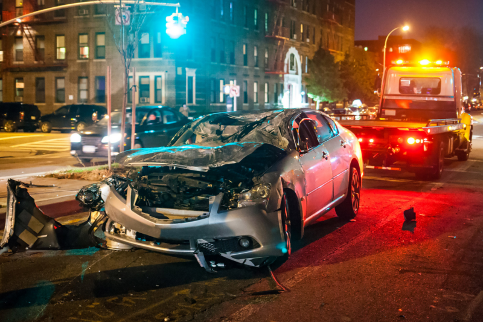

Auto Accidents in Huntsville, AL: What Every Driver Should Know
When you have been in a car crash, finding auto accident lawyers near me who understand North Alabama law and truly care about your recovery can make all the difference. The time after a wreck can be stressful. Medical bills, car repairs, insurance claims, and missed work can quickly become overwhelming. Having an experienced legal team on your side can help you manage these challenges and focus on getting better.
For more than 40 years, The Lackey Law Firm has helped injured drivers and families throughout Huntsville. Our attorneys have built a reputation for caring service, strong representation, and real dedication to our clients. As a family-owned law firm, we understand that every case affects someone’s life and future. We work hard to protect your rights and guide you through each step of the recovery process.
Our team helps clients understand their legal options, deal with insurance companies, and pursue fair compensation under Alabama law. From your first call to the end of your case, we handle the details so you can focus on your health and your family.
Leading Causes of Car Accidents
Car accidents can happen anywhere and for many different reasons. In Huntsville, several common factors are responsible for most collisions. Understanding these causes can help drivers stay alert and help injured victims recognize when another driver’s negligence may be to blame.
1. Distracted Driving
One of the leading causes of accidents is distracted driving. This includes texting, adjusting a GPS, eating, or any activity that takes a driver’s eyes off the road. Even a few seconds of distraction can cause a serious crash.
2. Speeding and Aggressive Driving
Driving too fast for road or weather conditions increases the risk of losing control and makes collisions more severe. Aggressive behaviors such as tailgating or changing lanes too quickly are also major contributors to wrecks.
3. Driving Under the Influence
Alcohol and drugs slow reaction time and impair judgment. Despite strict DUI laws in Alabama, impaired driving remains a serious threat to other motorists and pedestrians.
4. Weather and Road Conditions
Rain, fog, and poorly maintained roads can make driving dangerous. Slippery surfaces and reduced visibility often lead to rear-end collisions and multi-car pileups, especially on busy highways like I-565 or Memorial Parkway.
5. Failure to Yield or Obey Traffic Signals
Ignoring stop signs, red lights, or right-of-way rules is a frequent cause of intersection crashes. These accidents can result in severe injuries due to the angle and speed of impact.
Each of these causes involves some form of negligence, and determining who is responsible requires careful investigation. Our team reviews accident reports, gathers evidence, and works with experts to identify what caused your crash and who should be held accountable.
Important Actions to Take After a Crash
The time right after a car crash can be confusing and stressful. Knowing what to do can help protect your safety, your health, and your legal rights. These steps can also make a big difference if you decide to pursue an insurance claim or legal action later.
1. Call 911
Always report the accident to the police. An officer will create an official report that documents what happened. This report is often important for insurance and legal purposes.
2. Check for Injuries and Seek Medical Care
Your health and safety come first. Even if you feel fine, some injuries do not appear right away. Visit a doctor or emergency room as soon as possible.
3. Document the Scene
If it is safe, take photos and videos of the vehicles, the road, traffic signs, and any visible injuries. This evidence can be helpful later when determining fault or damages.
4. Exchange Information
Get the names, phone numbers, driver’s license numbers, and insurance information of everyone involved. If there are witnesses, collect their contact information too.
5. Avoid Admitting Fault
Be calm and respectful, but do not apologize or accept blame. The cause of a crash is not always clear right away and should be reviewed after a full investigation.
6. Contact a Huntsville Personal Injury Lawyer
Before speaking to insurance companies, contact The Lackey Law Firm. Our attorneys can explain your rights, handle insurance communications, and make sure your claim is filed correctly.
Our firm has represented injured drivers and passengers in Huntsville. We can help you understand your options, protect your rights, and focus on what matters most, which is your recovery.
How a Personal Injury Attorney Can Help
After a car accident, many people are unsure where to start. Between medical bills, car repairs, and insurance calls, it can feel overwhelming. Working with an experienced attorney can make the process easier and help protect your rights from the very beginning.
We guide accident victims in Huntsville through every step of their recovery and legal process. Our goal is to reduce your stress, explain your options clearly, and pursue the compensation you deserve for your injuries and losses.
1. Investigating the Accident
We gather the key evidence needed to understand what happened, including police reports, witness statements, photos, and medical records. A detailed investigation helps us identify who was at fault and build a strong case for you.
2. Communicating with Insurance Companies
Insurance adjusters often try to settle quickly and for less than what victims need. We handle all communication with the insurance companies so you can focus on healing. Our team knows how to push back against unfair offers and seek fair compensation.
3. Working with Experts
We partner with medical professionals, accident reconstruction specialists, and financial experts to show the full impact of the crash. These insights help us prove the extent of your injuries and how they affect your life.
4. Negotiating and Filing Claims
We take care of all paperwork, negotiations, and legal filings. If a fair settlement cannot be reached, we are prepared to take your case to court. Our experience in Alabama courts allows us to represent you with confidence and determination.
We are committed to standing up for injured clients and their families. When you work with us, you can expect respect, honesty, and personal attention every step of the way.
Recoverable Damages After an Auto Accident
A serious car accident can bring major financial and emotional challenges. Medical expenses, time away from work, and the stress of recovery can all take a toll. Knowing what compensation may be available can help you move forward with confidence.
The compensation you may receive depends on the facts of your case, the severity of your injuries, and the impact on your daily life. Our team carefully reviews each situation to pursue fair results for our clients.
1. Medical Expenses
Accident victims can often recover the cost of hospital stays, follow-up appointments, therapy, medications, and any necessary future treatment related to their injuries.
2. Lost Wages
If your injuries prevent you from working, you may be able to recover income lost during your recovery and any future loss of earning potential.
3. Property Damage
Compensation may include the cost to repair or replace your vehicle and any personal property damaged in the crash.
4. Pain and Suffering
Physical pain, emotional distress, and loss of enjoyment of life are considered non-economic damages. These reflect the personal impact an accident can have beyond financial losses.
5. Other Related Costs
You may also be able to recover expenses such as transportation to medical appointments or in-home care, depending on your situation.
Every car accident case is unique. A knowledgeable Huntsville personal injury lawyer can explain what damages apply to your situation and help ensure that nothing is overlooked during the claims process.
Auto Accidents in Huntsville
Huntsville is one of the fastest-growing cities in Alabama, and with more drivers on the road, traffic has become heavier and more complex. Major routes see thousands of vehicles each day, which increases the risk of serious collisions.
Many of the accidents that happen in and around Huntsville are caused by distracted or impatient driving, especially during morning and evening rush hours. Intersections near shopping centers, construction zones, and schools are also common locations for rear-end and side-impact crashes.
In recent years, local law enforcement and city officials have focused on improving traffic flow and safety through better road design and public awareness. However, accidents continue to occur, often leaving victims with injuries, vehicle damage, and financial strain.
Understanding these local factors can be helpful if you have been involved in a crash. A Huntsville personal injury attorney who knows the area and local court system can provide practical guidance based on real experience handling cases in this community.
Curious About Auto Accident Claims in Huntsville, AL?
If you were injured in a car accident in Huntsville or a nearby area, you probably have questions about what to do next. Understanding how Alabama law works can help you protect your rights and make informed decisions after a crash. At The Lackey Law Firm, we are here to guide you through every step of that process.
1. How long do I have to file an auto accident claim in Huntsville?
Under Alabama law, most personal injury claims must be filed within two years from the date of the accident. Acting quickly allows your attorney to collect important evidence and begin building your case before deadlines pass.
For more on timing your claim, you can check our blog post Can I Still File a Lawsuit Weeks After a Car Accident?. It explains why waiting too long to take legal action can make it harder to prove fault, gather evidence, or recover fair compensation.
2. What if the other driver in Huntsville does not have insurance?
If the at-fault driver does not have insurance, you may still be covered under your own uninsured or underinsured motorist policy. Our team can review your insurance coverage and explain your options for recovering compensation.
3. Do I have to go to court for my car accident case?
Not always. Many cases in Huntsville are resolved through settlements. If a fair resolution cannot be reached, our attorneys can file your case in the local court system and represent you at every stage of the process.
4. Can I still recover compensation if I was partly at fault for the crash?
Alabama uses a contributory negligence rule, which means that if you are found even partly responsible for the accident, you may not be able to recover damages. We can help you understand how this rule applies to your case and work to protect your right to fair treatment.
5. How much does it cost to hire a Huntsville injury lawyer?
Like many personal injury firms, The Lackey Law Firm works on a contingency fee basis. You do not pay any upfront costs, and we only collect a fee if your case is successful. This allows you to get experienced legal help without added financial stress.
6. Should I report my car accident to the Huntsville Police Department?
Yes. Any accident that causes injury, death, or significant property damage should be reported to the Huntsville Police Department. An official report provides important documentation that can support your insurance claim or legal case.
7. Should I talk to the insurance company before contacting a lawyer?
It is best to speak with a lawyer before giving any recorded statements to an insurance adjuster. Insurance companies often look for ways to reduce payouts or shift blame. Our attorneys can handle communication on your behalf to help protect your interests.
Getting local guidance from a Huntsville auto accident lawyer who knows the community, the courts, and the insurance system can make a major difference in your case.
Talk to a Huntsville Auto Accident Lawyer Today
After a car accident, finding the right help can bring peace of mind and a clear path forward. With the right support, you can focus on recovery while knowing that your case is being handled with care.
If you or a loved one has been injured in a car crash, it is important to get legal guidance as soon as possible. Speaking with an attorney early can help protect your rights and give you the best chance at a strong claim.
The attorneys at The Lackey Law Firm are here to listen, answer your questions, and guide you through each step of the process. We are committed to helping people in Huntsville move forward after an accident with confidence and peace of mind.